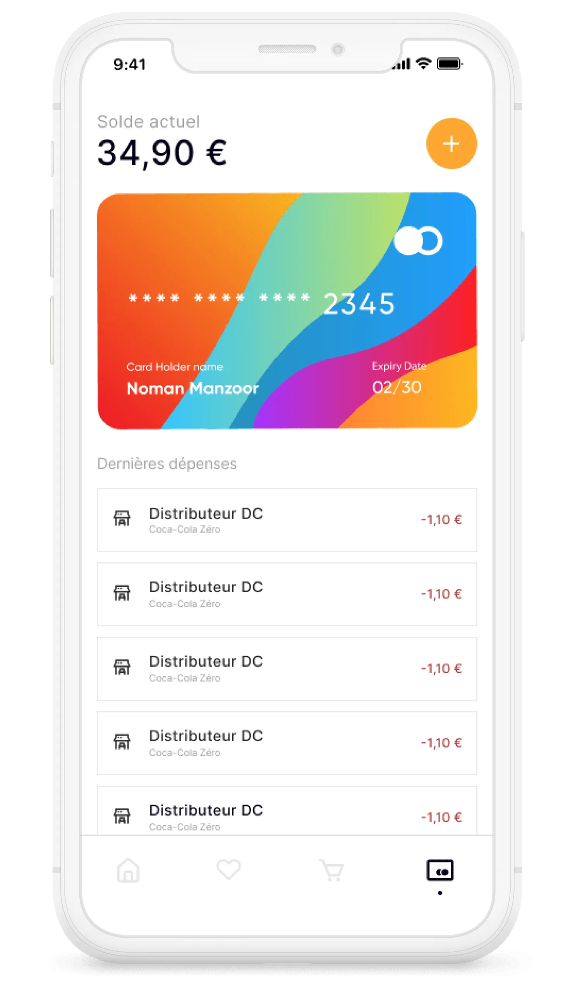
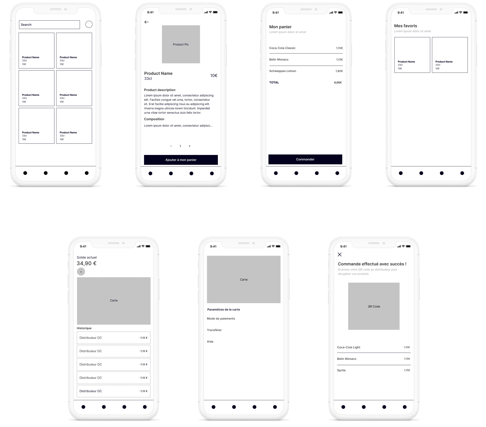
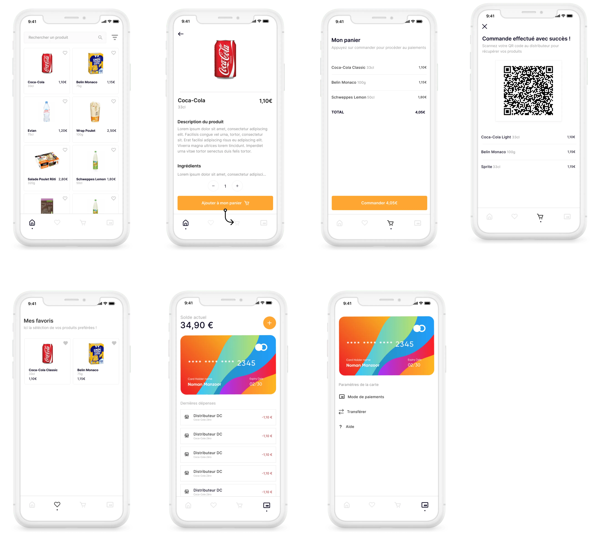

Études de cas
Facilitate the purchasing process in food vending machines
Context
This mission was carried out in a group in the school setting in 3 sessions of 3h30 for the Digital Campus Lyon school. The exercise was initiated by Louis Gounon, innovation project manager for ExoFlow.
Result
✷ Queue Fluidization
✷ Better machine adoption (15% lower abandonment rate)
✷ Better adoption of the payment system.
Current state
Vending machines have a number of areas for improvement according to many users, including the payment process. One of the most common complaints from users is the illogicality of the payment process.
Research
We conducted 10 interviews with Digital Campus school administration and students, here is what they said:
1. "Why does the machine necessarily require you to have change? Sometimes I have to plan in the morning even if I want to get something out of the machine at 3pm."
2. "It would be really convenient if we could use our corporate benefits like Swile cards, or Eden Red"
3. "The payment process is really illogical when the card payment is available on the machine, I don't know if I should pay before or after the product selection"
Goal
So I was able, thanks to all its elements, to identify a problematic to keep a framework: "How to successfully save time for feeder users and limit pain points for the user?"
Ideation
From this problem, several ideas emerged, the first was to create a vending machine with a touch screen, which would clarify the instructions for the payment process as well as the entire purchase process. The second idea was to create an application that would use the same format as Uber Eats (viewing the items in the machine, the ability to pay on the application, adding credit from different sources). All you would have to do is scan the QR code on the machine to retrieve the order.
Wireframe
From this idea, I was able to start creating the first wireframes.
User flow
In order to best define the needs of the users, and to be sure not to take the wrong path, we had to imagine the different possible paths.

Hi-fi design
After a conclusive test phase on the wireframes, I could start the high-fidelity design.
Learnings
On a technical level, "prototyping" with several people is something radically different in the organization of the Figma file. I also learned how to lead a project in a group when under the pressure of a deadline.
See also: making drug inserts more accessible →